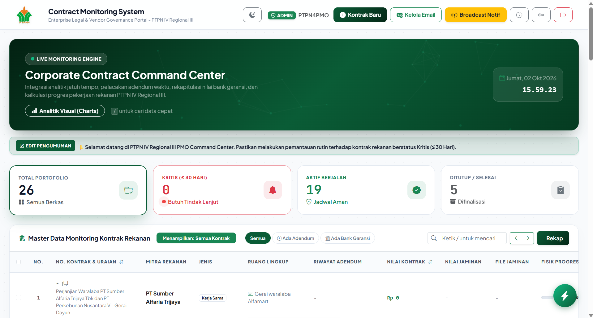

Mahasiswa Sistem Informasi & Presiden Mahasiswa BEM yang berfokus pada pengembangan perangkat lunak, sistem manajemen database, serta analisis data.
Sedikit informasi mengenai latar belakang dan profil diri saya.
Halo! Saya adalah individu yang antusias dan berdedikasi tinggi dalam mengeksplorasi dunia teknologi informasi dan manajemen sistem. Aktif berorganisasi serta berpengalaman merancang aplikasi fungsional dan tata kelola data.
Alat dan bahasa pemrograman yang biasa saya gunakan.
Beberapa proyek atau aplikasi unggulan yang pernah saya kerjakan.

Sistem pemantauan kontrak korporat dan vendor, pelacakan adendum waktu, rekapitulasi bank garansi, serta analitik visual progres pekerjaan rekanan secara *real-time*.
Aplikasi berbasis desktop/web dengan fitur CRUD lengkap untuk manajemen data operasional secara efisien dan terstruktur[cite: 1].
Proyek pengolahan data statistik mendalam, pembuatan laporan otomatis, dan visualisasi grafik interaktif untuk mendukung proses pengambilan keputusan[cite: 1].